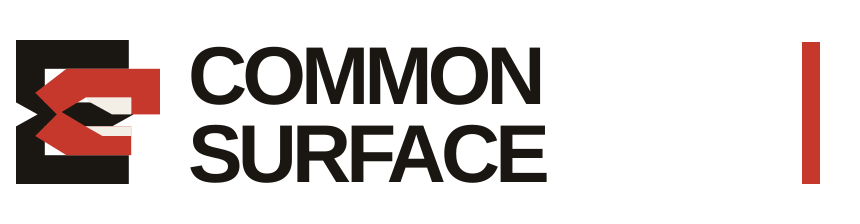
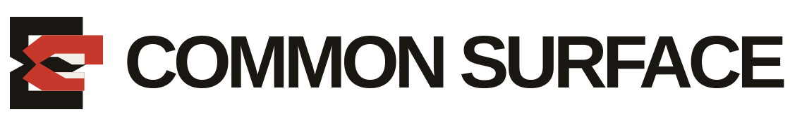
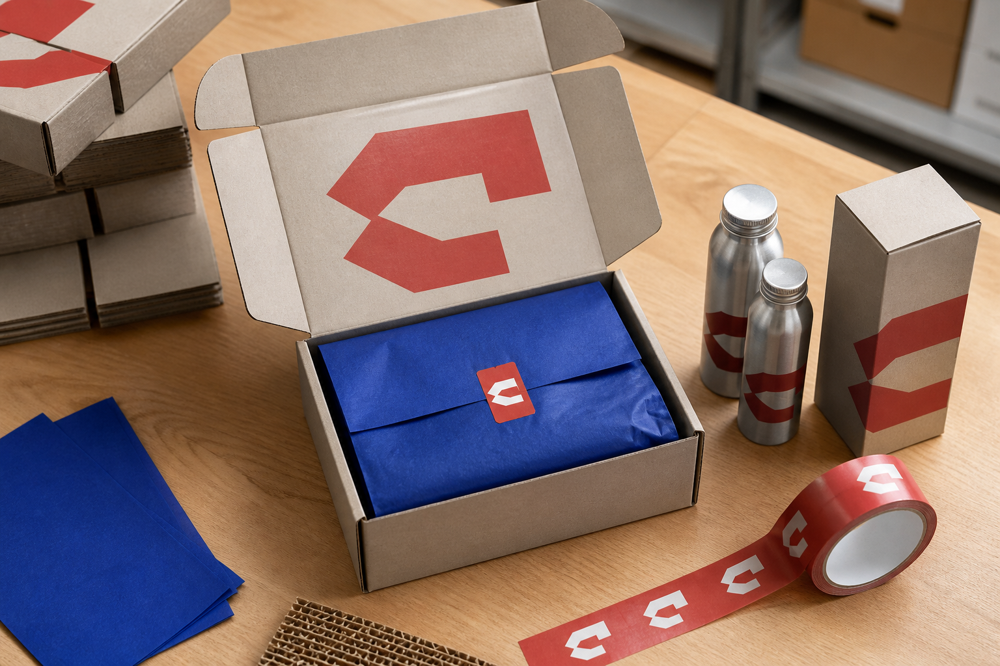

첫 노출 · 패키지 전면 · 캠페인 엔드프레임
IDENTITY / R2ONE
SIGN.
EVERY
SURFACE.
두 표면이 맞물려 하나의 `C/S`를 만든다. 더 이상 이름 옆의 장식이 아니라, 제품·공간·의류·인쇄물에서 COMMON SURFACE를 먼저 기억하게 하는 주 식별자다.
Logo
Family.
주 워드마크, 독립 심벌, 가로형 락업이 서로 다른 거리에 대응한다. 문자가 읽히지 않는 크기에서도 심벌의 맞물린 단면은 유지된다.
Applied
Identity.
로고는 같은 위치에 반복하지 않는다. 재질과 거리, 제작 방식에 따라 인쇄·자수·타공·각인·엠보싱으로 변환되며 실루엣은 유지된다.

인쇄 · 테이프 · 씰
대형 프린트 · 자수 · 패치
타공 금속 · 유리 · 윈도 그래픽
엠보싱 · 스탬프 · 다이컷
Control
Rules.
심벌은 유연하게 쓰되 형태를 임의로 재해석하지 않는다. 생성 이미지 속 응용은 아트디렉션 기준이며 생산 파일은 이 SVG 패밀리를 사용한다.